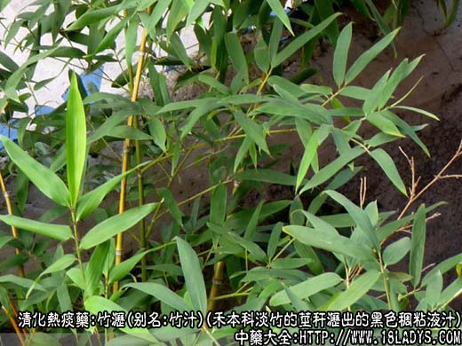
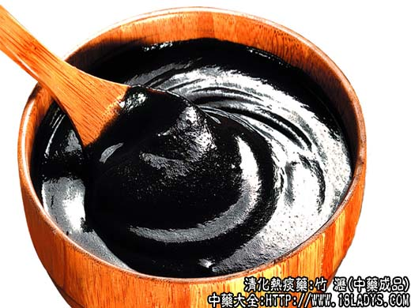
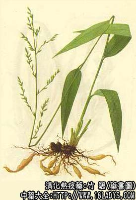

竹沥为少常用中药，《神农本草经》列为中品，竹顶下商品有竹沥膏与竹沥水两种。
别名：竹汁、竹油。
来源：为禾本科植物或竹状乔木或灌木淡竹的茎秆经加工火烤沥出的黑色粘稠液汁。
产地：华东、中南、西南产竹地区均可制造，天津亦有生产。
加工方法：取新鲜的淡竹，截成20~30厘米的段，纵劈成块。装入铁桶内塞紧，桶外糊泥，桶口用铁丝纱封住，斜悬于铁架上，下面放一容器。然后在桶的周围微火烧烤。其油即滴沥于容器中，称竹沥油。
竹沥膏：取竹沥油，加入十倍的饴糖，加热搅拌均匀即成。
性状鉴别：呈黑油膏状。具烟油样气，味微苦涩而有清凉感。
竹沥水：取竹沥油0.5kg加入清水5kg，白矾30g置铜锅内，加热熬煮，放冷沉淀，取其上部清液约4kg。
性状鉴别：呈淡棕红色液体状。气味同竹沥膏。
功效与作用：清热化痰。
炮制：生用。
性味：甘、大寒。
归经：入心、胃、大肠经。
功能：清热化痰，止咳定喘。
主治：中风不语，痰迷癫狂，瘟热咳嗽，消渴烦闷。
临床应用：1、治风热咳嗽。凡感冒、急性上呼吸道炎、急性支气管炎、肺炎，表现有痰火炽盛、胸闷短气、喘息、口干声嘶、咳痰艰难者，宜用甘寒之竹油，配清热、祛痰药，方如清痰泻热方。
2、治中风，作用和用法与天竺黄相同。
附：1、竹沥有时不易取得，实用性颇受限制，目前多以天竺黄代替，如两者都缺，可勉强以竹茹代之，但清化痰效力大减。
2、竹沥与天竺黄比较：两者都能清热、祛痰、镇惊，但竹沥大寒，其性滑利，清热润操之力较好，且通透达经络，治四肢拘挛；竺黄微寒，其性较缓，故多用于小儿。3姜汁常配竹沥同用，即可加强祛痰效果，又能以其辛热制竹沥之寒滑，以免伤及胃气。
用量：30～90g。冲服。
处方举例：清痰泻热方：象贝母9g，杏仁9g，竹沥60g（冲服），芦根30g，冬瓜子9g，桑白皮9g，枇杷叶6g，水煎服。
注：1、制造竹沥的原料应以淡竹为正品。但目前淡竹与小杂竹均可取用。
2、竹沥油为配制竹沥膏和竹沥水的原料。配方中少用。